Diseño y fabricación en Ayacucho
Muebles a medida en melamina y metal
Esa esquina puede ser tu próximo escritorio. Esa pared puede darte el espacio que le falta a tu cocina. En DJP Melamina diseñamos muebles para aprovechar mejor cada rincón de tu hogar o negocio.
 Clósets
Clósets
 Melamina y metal
Melamina y metal
 Muebles para sala
Muebles para sala
Un mueble pensado para cómo vives
Una cocina en la que todo queda a mano. Un clóset con sitio para lo que usas cada día. Un escritorio donde puedes trabajar con comodidad. Cuéntanos qué necesitas guardar, cuánto espacio tienes y cómo usas ese ambiente. A partir de ahí definimos contigo las medidas, la distribución y los acabados.
- Medidas. Aprovecha desde una esquina pequeña hasta una pared completa.
- Distribución. Elige qué quieres guardar en cajones, repisas o detrás de puertas.
- Acabados. Combina colores, texturas de melamina y estructuras metálicas según el mueble.
Catálogo de muebles
Explora 30 modelos de referencia para tu cocina, dormitorio, sala o zona de trabajo. Si te gusta un diseño, podemos adaptar las medidas, los colores y el espacio de guardado.
30 modelos
Escritorio con estructura metálica
Melamina y metal en un diseño despejado para estudiar o trabajar.
Cotizar este modelo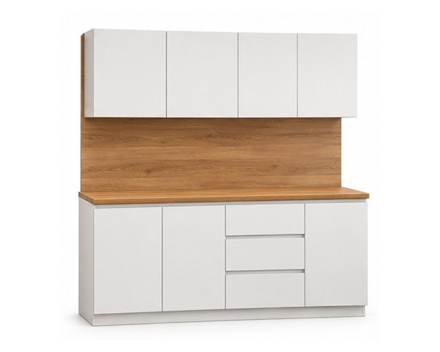
Reposteros de cocina
Módulos altos y bajos ajustados a tu espacio y a tus rutinas.
Cotizar este modelo
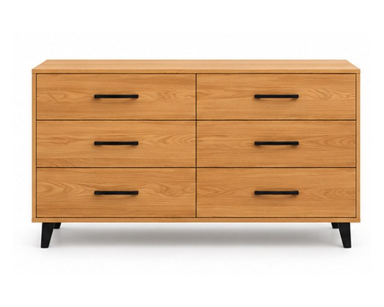
Cómoda de seis cajones
Separa prendas, ropa de cama y accesorios con cajones amplios y fáciles de alcanzar.
Cotizar este modelo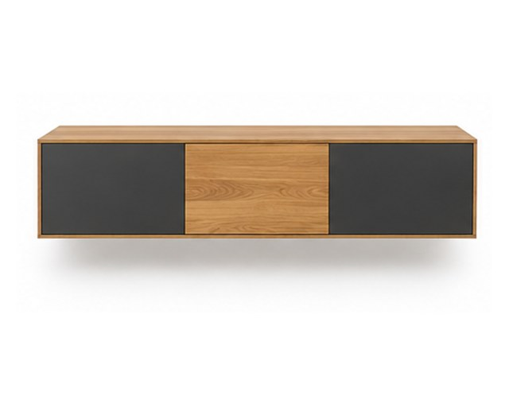
Mueble flotante para TV
Deja el piso despejado y guarda los controles y cables cerca del televisor.
Cotizar este modelo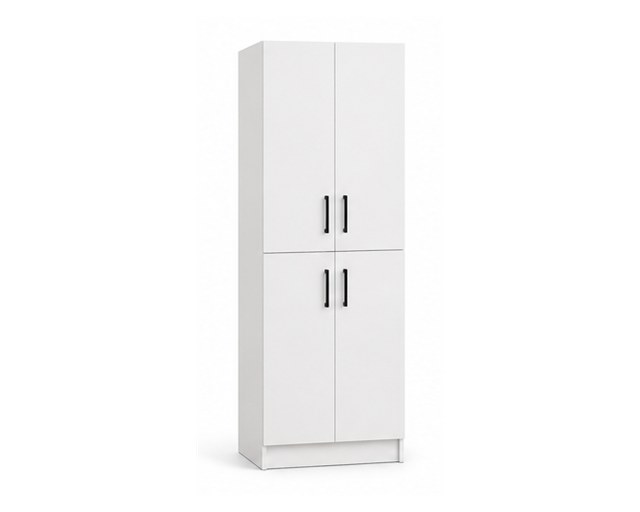
Despensa vertical
Reúne alimentos y utensilios en un mueble alto que aprovecha el espacio en vertical.
Cotizar este modelo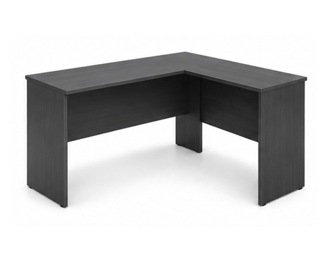
Escritorio gamer en L
Usa una esquina para ampliar el tablero y repartir el espacio entre pantallas y periféricos.
Cotizar este modelo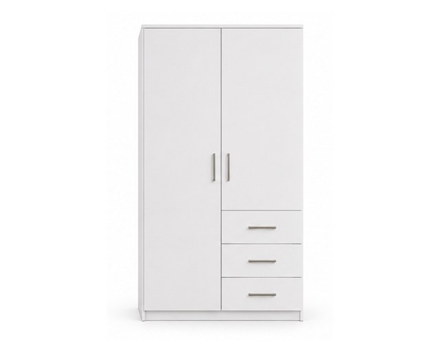
Ropero con cajones
Combina espacio para colgar ropa y cajones externos para lo que usas todos los días.
Cotizar este modelo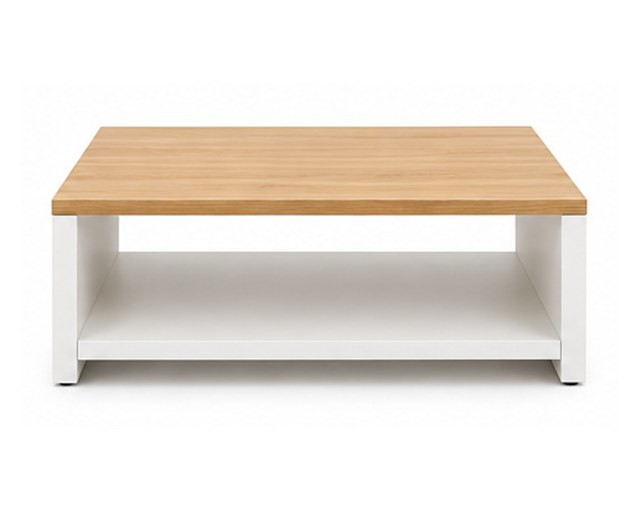
Mesa de centro con repisa
Usa el tablero para servir algo y la repisa inferior para guardar revistas o controles.
Cotizar este modelo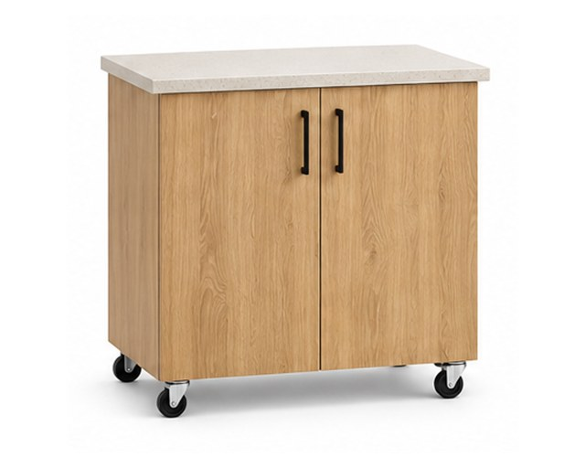
Isla de cocina compacta
Suma superficie de preparación y espacio para guardar lo que usas al cocinar.
Cotizar este modelo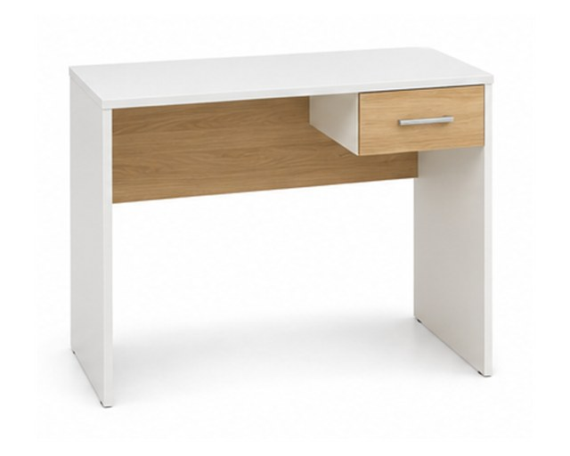
Escritorio compacto
Arma un rincón de estudio con un cajón para cuadernos y útiles de todos los días.
Cotizar este modelo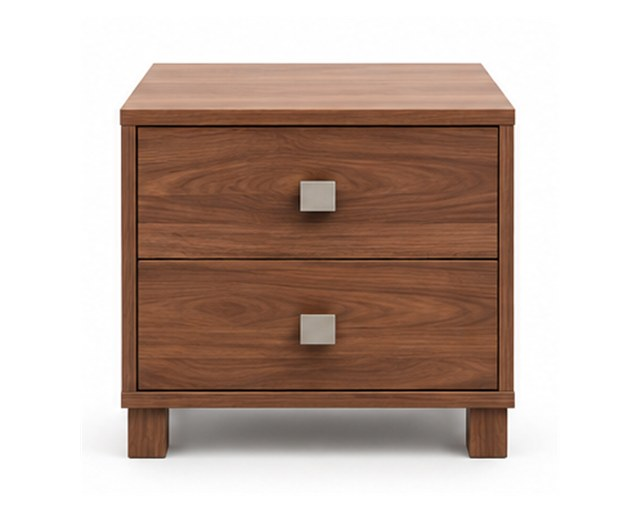
Velador de dos cajones
Ten a mano tus objetos de noche y reserva el tablero para una lámpara o un libro.
Cotizar este modelo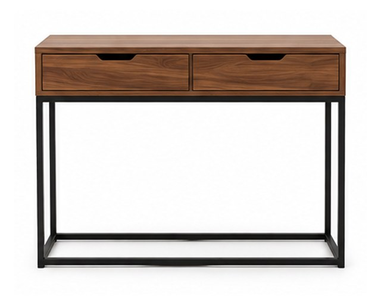
Consola para recibidor
Prepara un lugar para llaves y objetos de uso diario en un pasillo o junto a la puerta.
Cotizar este modelo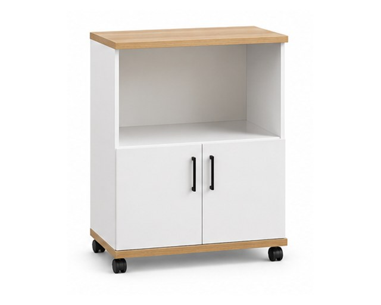
Mueble para microondas
Reserva un hueco para el equipo y libera espacio en el tablero principal.
Cotizar este modelo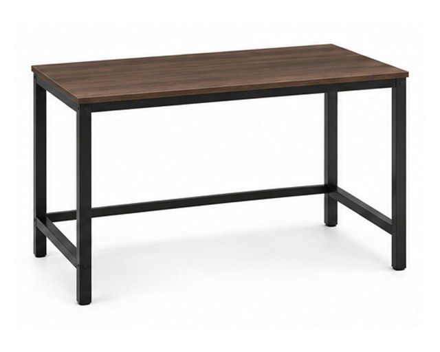
Escritorio industrial oscuro
Combina un tablero de acabado nogal con una base metálica para tu zona de trabajo.
Cotizar este modelo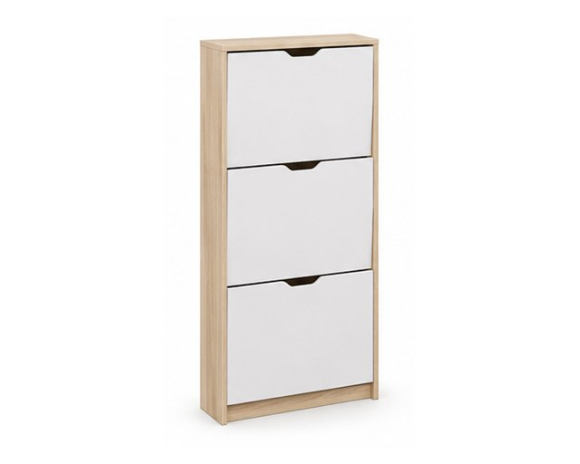
Zapatera vertical
Aprovecha una pared angosta del dormitorio o la entrada para guardar el calzado.
Cotizar este modelo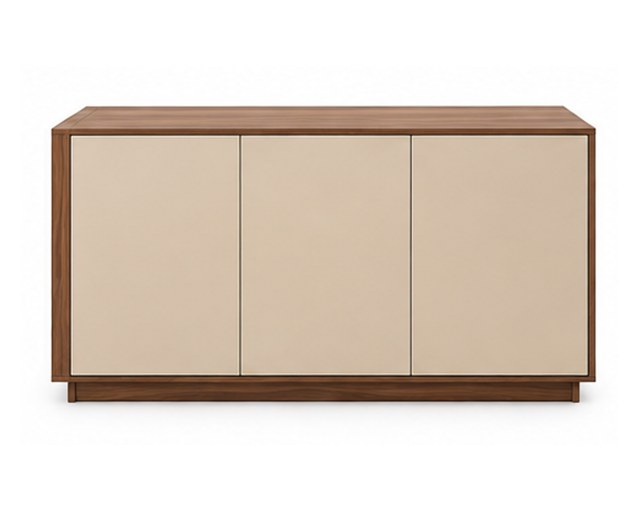
Aparador para comedor
Guarda platos, manteles y fuentes cerca de la mesa sin saturar la cocina.
Cotizar este modelo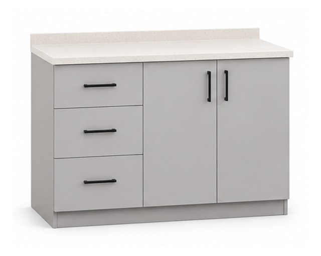
Repostero bajo con cajones
Deja cubiertos, ollas y otros utensilios al alcance de tu zona de trabajo.
Cotizar este modelo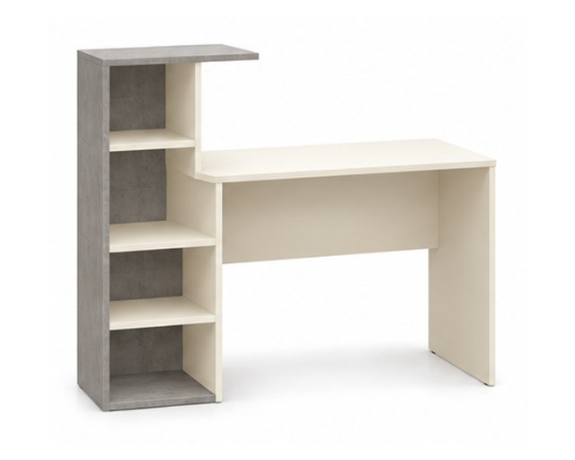
Escritorio con librero
Deja cuadernos y materiales a mano en las repisas integradas al mueble.
Cotizar este modelo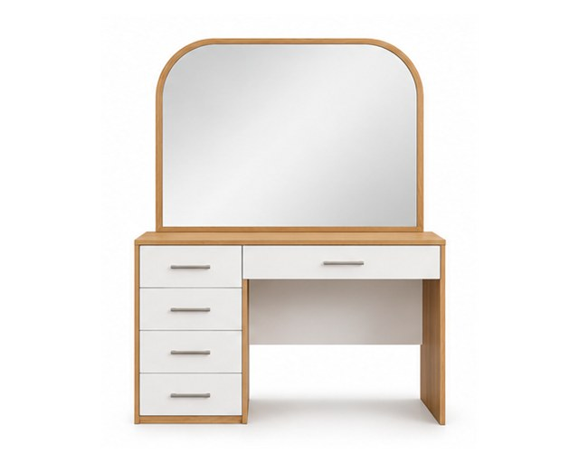
Tocador con espejo
Crea un rincón para arreglarte por las mañanas con espacio para guardar tus accesorios.
Cotizar este modelo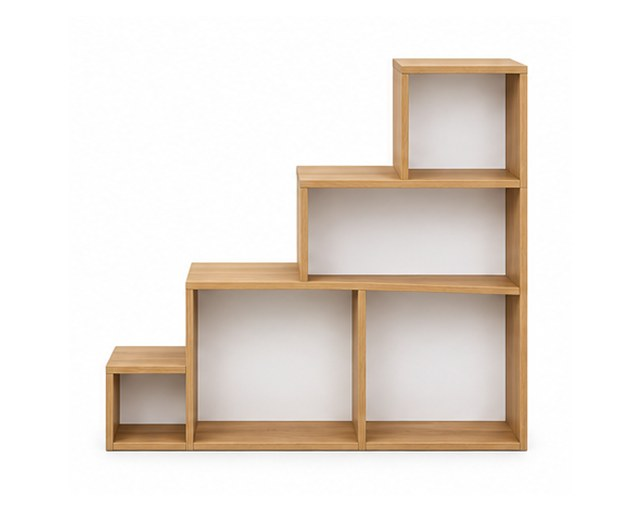
Librero escalonado
Organiza libros y cajas en compartimentos abiertos que también sirven para decorar.
Cotizar este modelo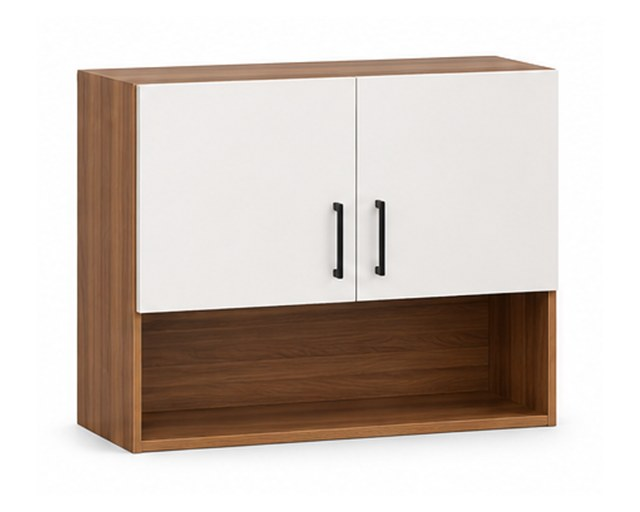
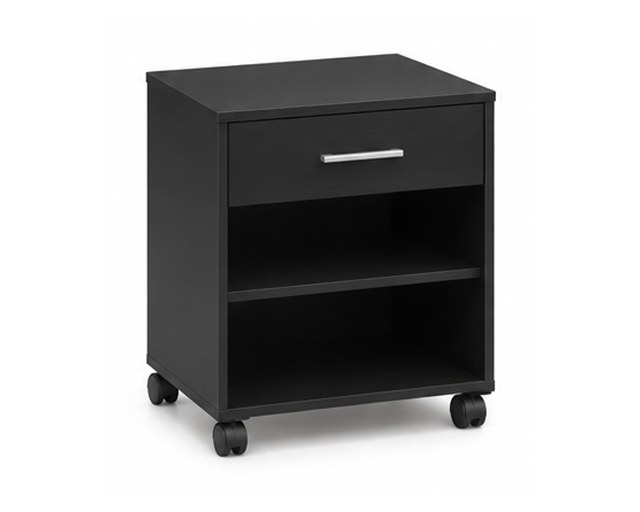
Carrito para impresora
Libera el escritorio con un mueble auxiliar para la impresora, el papel y los cables.
Cotizar este modelo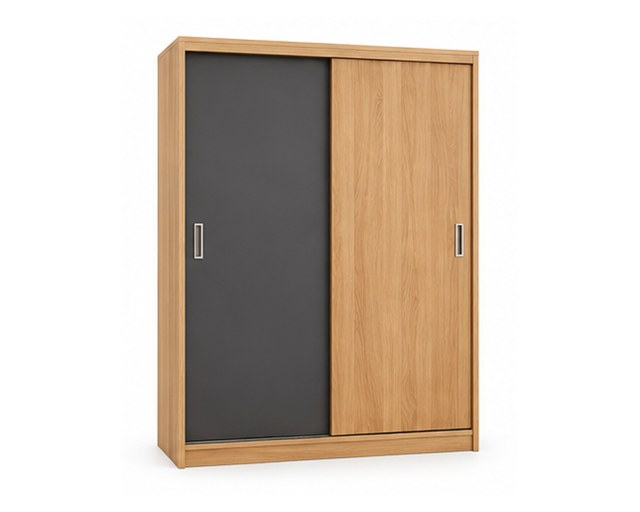
Clóset de puertas corredizas
Desliza las puertas sin ocupar el espacio de paso frente al clóset.
Cotizar este modelo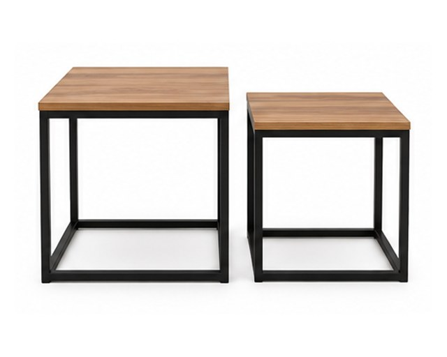
Mesas auxiliares
Acerca una mesa al sillón cuando la necesites y reúne ambas para liberar espacio.
Cotizar este modelo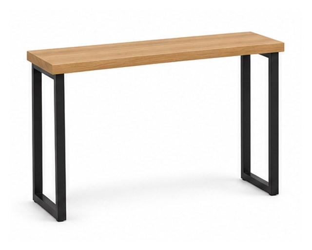
Barra desayunadora
Haz sitio para desayunar o sumar una superficie de apoyo en una cocina pequeña.
Cotizar este modelo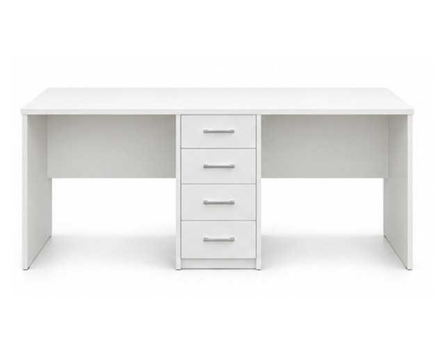
Escritorio para dos
Comparte una superficie larga con espacio para dos personas y cajones al centro.
Cotizar este modeloDiseño de interiores
Si quieres amoblar un ambiente completo, podemos pensar juntos dónde irá cada módulo y cómo combinar los acabados. Estas referencias muestran formas de ganar espacio y mantener el orden sin perder comodidad.
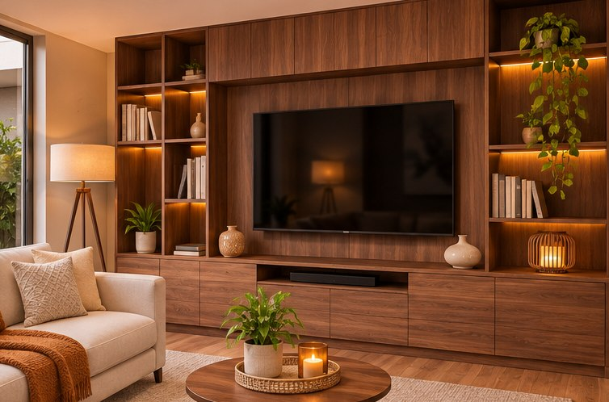

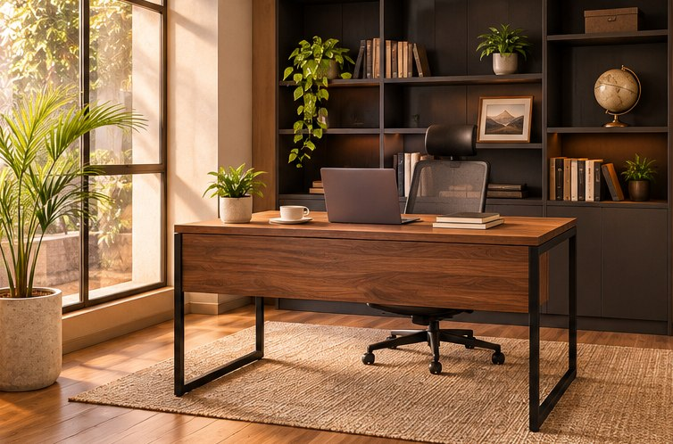
Una sala más despejada
Combina módulos cerrados para lo que quieres guardar y repisas abiertas para lo que te gusta tener a la vista.
Una cocina donde cocinar sea más fácil
Ubica platos, ollas y alimentos cerca de donde los usas. Un buen diseño deja sitio para moverte y preparar la comida.
Un lugar cómodo para trabajar
Piensa en el espacio para las piernas, los cables y las cosas que quieres alcanzar sin levantarte.
De tu idea al mueble
Puedes empezar con una foto y medidas aproximadas. Si todavía estás decidiendo entre dos ideas, cuéntanos qué te gustaría resolver y revisamos las opciones contigo.
Cuéntanos tu idea
Envíanos una foto o un modelo de referencia y las medidas aproximadas de tu espacio.
Definimos el diseño
Coordinamos contigo la distribución, los acabados y la cotización.
Acordamos la entrega
Una vez aprobado el diseño, coordinamos la fabricación y el envío a tu localidad.
Preguntas frecuentes
¿Qué necesito enviar para cotizar?
Mándanos una foto del lugar, el tipo de mueble que buscas y su ancho, alto y fondo aproximados. Si viste un modelo que te gusta, incluye su nombre o una captura.
¿Puedo cambiar el diseño de un modelo?
Sí. Los modelos del catálogo sirven como referencia para elegir la distribución, las medidas y los acabados de tu mueble. El diseño personalizado a medida es gratis.
¿A dónde hacen envíos?
Enviamos a toda la región Ayacucho, incluido el VRAEM. Indícanos tu distrito al escribirnos para coordinar la entrega.
¿Qué mueble tienes en mente?
Escríbenos con una foto de tu espacio y lo que necesitas. Si ya elegiste un modelo del catálogo, mándanos su nombre y empezamos por ahí.